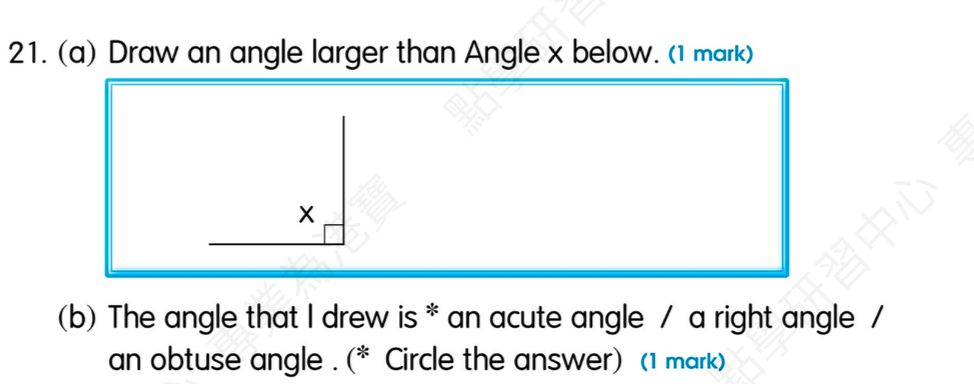
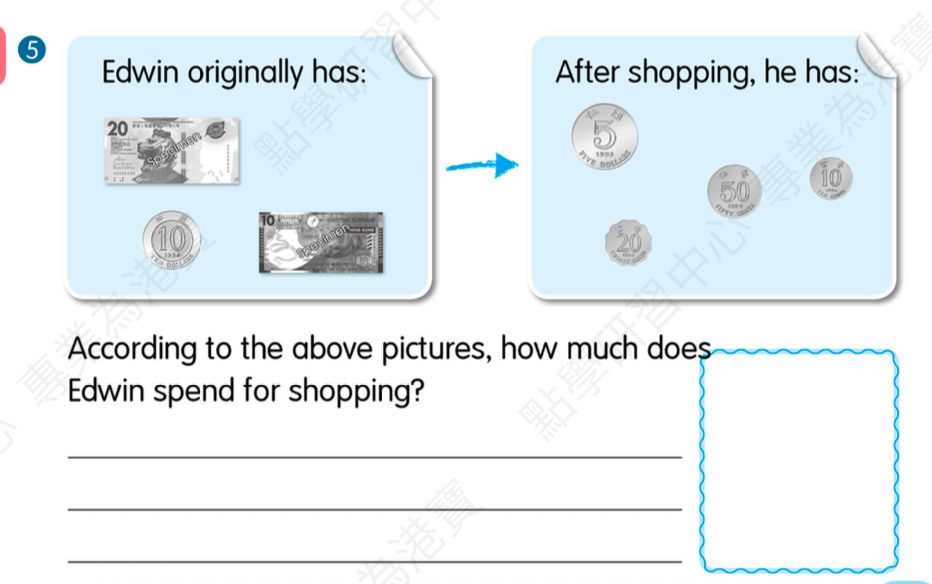

(play table tennis) / Wednesday
Answer: Jennifer likes playing table tennis on Wednesday.
Explanation: in + season；on + weekday；三单注意动词形式。
已掌握
| # | 单词/词组 | 中文意思 | 例句/说明 | 已掌握 |
|---|---|---|---|---|
| noun 名词 | ||||
| 1 | postcard | 明信片 | I sent a postcard to my friend. | |
| 2 | owner | 主人 | The dog loves its owner. | |
| 3 | market | 市场 | There is a market near my home. | |
| 4 | bank | 银行 | My mum goes to the bank. | |
| 5 | restaurant | 餐馆 | We eat dinner in a restaurant. | |
| 6 | hair | 头发 | Her hair is long. | |
| 7 | window | 窗户 | Open the window, please. | |
| 8 | deer | 小鹿 | I can use deer in class. | |
| 9 | future | 未来 | I will study hard in the future. | |
| verb 动词 | ||||
| 10 | stay | 待在 | I stay at home on rainy days. | |
| preposition 介词 | ||||
| 11 | behind | 在……之后；在……后面 | The cat is behind the box. | |
| phrase 短语 | ||||
| 12 | take off | 脱下 | Please take off your shoes. | |
| noun phrase 名词短语 | ||||
| 13 | primary student | 小学生 | I am a primary student. | |
| adjective 形容词 | ||||
| 14 | bored | 感到无聊的 | I feel bored on rainy days. | |
| 15 | hard-working | 勤劳的，勤奋的 | I can use hard-working in class. | |
| 16 | popular | 流行的 | I can use popular in class. | |
| modal verb 情态动词 | ||||
| 17 | must | 必须 | You must finish your homework. | |
| pronoun 代词 | ||||
| 18 | them | 它们 | I can see them in the garden. | |
| noun/verb 名词/动词 | ||||
| 19 | exercise | 锻炼 | Exercise is good for health. | |
| verb phrase 动词短语 | ||||
| 20 | go hiking | 去徒步 | We go hiking on Sunday. | |
| # | 单词/词组 | 中文意思 | 例句/说明 | 已掌握 |
|---|---|---|---|---|
| adjective 形容词 | ||||
| 1 | wonderful | 精彩的 | We had a wonderful day. | |
| 2 | fantastic | 超棒的 | The show was fantastic. | |
| 3 | enormous | 巨大的 | The elephant is enormous. | |
| 4 | dangerous | 危险的 | The road is dangerous. | |
| 5 | brilliant | 聪明的；杰出的 | That is a brilliant idea. | |
| 6 | excellent | 优秀 | Your work is excellent. | |
| noun 名词 | ||||
| 7 | Australia | 澳大利亚 | Australia is a big country. | |
| 8 | buffet | 自助餐 | We had lunch at a buffet. | |
| 9 | resident | 居民 | He is a resident of this city. | |
| 10 | packet | 包；小包 | I bought a packet of biscuits. | |
| 11 | boxing | 拳击 | Boxing is a sport. | |
| 12 | stationery | 文具 | I put my stationery in my bag. | |
| 13 | sausage | 香肠 | I eat a sausage for breakfast. | |
| 14 | fin | 鱼鳍 | A fish has a fin. | |
| 15 | slide | 滑梯 | The child goes down the slide. | |
| 16 | mistake | 错误 | I made a mistake. | |
| 17 | leader | 领导者 | The leader helps the group. | |
| 18 | article | 文章 | Read the article. | |
| 19 | genie | 精灵 | The genie grants a wish. | |
| 20 | carpet | 地毯 | The carpet is on the floor. | |
| 21 | housewife | 家庭主妇 | The housewife is cooking. | |
| 22 | salad | 沙拉 | I can use salad in class. | |
| 23 | dust | 灰尘；除灰 | I can use dust in class. | |
| 24 | blog | 博客 | I can use blog in class. | |
| 25 | Carnival | 嘉年华 | We will go to the Carnival on Sunday. | |
| noun phrase 名词短语 | ||||
| 26 | convenience store | 便利店 | I buy water at the convenience store. | |
| 27 | department store | 百货商店 | We shop at the department store. | |
| verb 动词 | ||||
| 28 | train | 训练 | I train every day. | |
| 29 | celebrate | 庆祝 | We celebrate my birthday. | |
| 30 | wrap | 包装 | I can use wrap in class. | |
| # | 单词/词组 | 中文意思 | 例句/说明 | 已掌握 |
|---|---|---|---|---|
| time/date 时间日期 | ||||
| 1 | October | 十月 | October is the tenth month. | |
| 2 | Thursday | 星期四 | Thursday is a weekday. | |
| time unit 时间单位 | ||||
| 3 | day | 日 | A day has 24 hours. | |
| 4 | hour | 时 | An hour has 60 minutes. | |
| numbers 数字 | ||||
| 5 | four | 4 | Four is 4. | |
| 6 | eight | 8 | Eight is 8. | |
| 7 | fourteen | 14 | Fourteen is 14. | |
| 8 | twenty | 20 | Twenty is 20. | |
| 9 | thirty | 30 | Thirty is 30. | |
| 10 | eighty | 80 | Eighty is 80. | |
| 11 | ninety | 90 | Ninety is 90. | |
| 12 | thousand | 千 | One thousand is 1000. | |
| solid shape 立体图形 | ||||
| 13 | cone | 圆锥 | A cone has one curved face. | |
| plane shape 平面图形 | ||||
| 14 | square | 正方形 | A square has four equal sides. | |
| geometry 几何 | ||||
| 15 | right angle | 直角 | A right angle is 90 degrees. | |
| # | 单词/词组 | 中文意思 | 例句/说明 | 已掌握 |
|---|---|---|---|---|
| operations 运算 | ||||
| 1 | addition | 加法 | Addition means putting numbers together. | |
| 2 | subtraction | 减法 | Subtraction means taking away. | |
| 3 | altogether | 一起 | How many are there altogether? | |
| 4 | be left | 剩下的 | How many apples will be left? | |
| geometry 几何 | ||||
| 5 | grid | 网格 | A grid helps us find positions. | |
| 6 | parallel | 平行 | Parallel lines never meet. | |
| question word 题目词 | ||||
| 7 | compare | 比较 | We compare two numbers. | |
| 8 | calculate | 计算 | Calculate the answer. | |
| 9 | estimate | 估计 | Estimate the answer first. | |
| 10 | onwards | 向前；继续向前 | Count onwards from 20. | |
| 11 | backwards | 向后；倒着 | Count backwards from 20. | |
| 12 | match | 匹配 | Match the number to the word. | |
| 13 | respectively | 分别地 | Tom and Ben have 2 and 3 books respectively. | |
| shape 形状 | ||||
| 14 | circle | 圈；圆 | Draw a circle around the answer. | |
| answer 答案 | ||||
| 15 | answer | 答案 | Write the answer in the box. | |
| time/date 时间日期 | ||||
| 16 | common year | 平年 | I can read common year in a math question. | |
| position 位置 | ||||
| 17 | behind | 后面 | The bag is behind the chair. | |
| 18 | below | 下面 | The box is below the table. | |
| 19 | front | 前面 | The door is at the front of the room. | |
| 20 | above | 上面 | The clock is above the board. | |
| operations calculation 运算 | ||||
| 21 | A times B | A✖️B | A times B means multiplication. | |
| 22 | equally | 平等地 | Share the apples equally. | |
| currency money 货币 | ||||
| 23 | dollar | 元 | One dollar has 100 cents. | |
| 24 | pay for | 支付 | I pay for the book. | |
| measurement 测量 | ||||
| 25 | measure | 测量 | We measure the length with a ruler. | |
| geometry tool 几何工具 | ||||
| 26 | set square | 三角尺 | A set square helps us draw angles. | |
| 句型结构 | ||||
| 27 | Angle ... is larger than Angle ... | 角......大于角...... | Angle A is larger than Angle B. | |
| 28 | Angle ... is the largest. | 角......是最大的。 | Angle A is the largest. | |
| 29 | Angle ... is the smallest. | 角......是最小的。 | Angle B is the smallest. | |
| 30 | ... is to the west of ... | ......位于......的西侧。 | The bank is to the west of the school. | |


